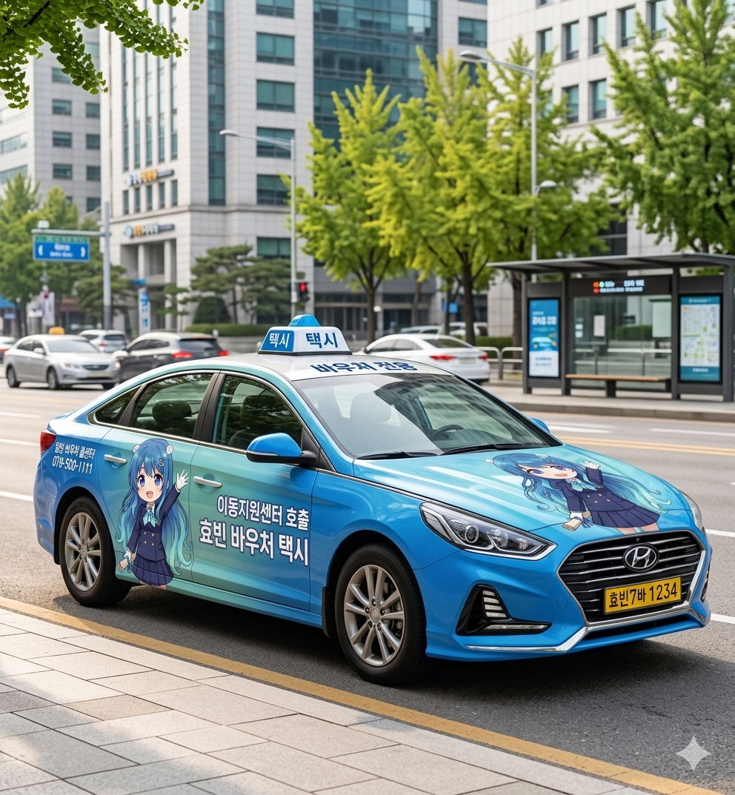
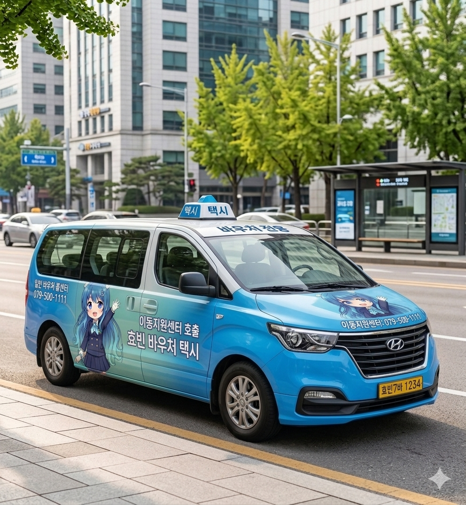

바우처 택시 안내
비휠체어 교통약자를 위한 빠르고 편리한 이동
효빈광역시 바우처 택시는 휠체어를 이용하지 않는 교통약자(시각·청각 장애인, 임산부, 노약자 등)의 대기시간을 단축하고 이동 편의를 증진하기 위해 도입된 맞춤형 교통복지 서비스입니다. 관내 일반 택시 운송 사업자와 협약을 맺어, 이용자가 일반 택시를 이용할 때 발생하는 요금의 일정 부분을 효빈시에서 지원합니다.


효빈 아이맘(Mom) 바우처 택시
대중교통 이용이 불편한 임산부와 영유아(24개월 이하)를 동반한 가정의 원활한 병원 진료 및 외출을 돕기 위해, 전용 바우처 택시를 별도로 지정 운영하고 있습니다. 모든 배차 차량에는 프리미엄 유아용 카시트 및 공기청정기가 기본 장착되어 있어 안심하고 이용하실 수 있습니다.
이용 대상 및 지원 한도
| 이용 대상 |
|
|---|---|
| 지원 횟수 및 한도 |
|
이용 요금 (본인 부담금)
- 기본 요금 (5km 이내) 1,200원
- 추가 요금 1km 당 100원 추가
- 최대 상한액 3,000원
※ 한바다 콜택시 요금과 동일하게 적용되며, 실제 택시 미터기 요금과 본인 부담금의 차액은 효빈시에서 택시 사업자에게 직접 정산합니다.
운행 지역 및 시간
운행 지역
효빈광역시 전역 (8구 1군 관내 운행 원칙)
운행 시간
365일 24시간 연중무휴
(※ 일반 택시를 연계하는 방식으로, 출퇴근 등 택시 수요가 몰리는 혼잡 시간대에는 배차가 다소 지연될 수 있습니다.)
바우처 택시 호출 방법
스마트폰 앱(App) 호출
'효빈 이동지원센터' 통합 앱을 설치하시면 바우처 택시 전용 메뉴를 통해 가장 가까운 거리에 있는 택시를 빠르게 배차받을 수 있습니다.
앱 다운로드 바로가기콜센터 전화 호출
앱 사용이 어려우신 경우, 통합 콜센터로 전화하시면 전문 상담원이 배차를 도와드립니다. (아이맘 택시는 전용 번호 이용)
담당부서 : 효빈광역시 교통국 교통약자지원과 (바우처택시운영팀)
행정문의: 079-500-1234 최종업데이트: 2026-03-31
현재 페이지에서 제공되는 정보에 대하여 만족하십니까?